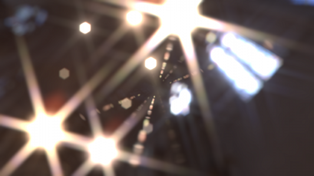
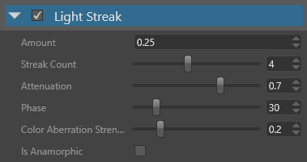
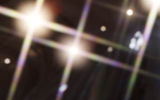
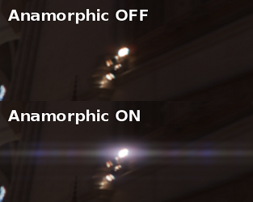

ライトストリーク
中級 アーティスト
ライトストリーク（Light streaks） エフェクトは、ブルームエフェクトと同様に、明度フィルターの結果を利用して、明るい部分をある方向に沿ってにじませるものです。光点から星型のビームが発生します。

プロパティ

| プロパティ | 説明 |
|---|---|
| Amount | ライトストリークの強さ。 |
| Streak Count | 輝点から放たれるビームの数。数が多いほど、パフォーマンスコストが高くなります。 |
| Attenuation | ストリークに沿って光が減衰する速さ（0 ならすぐに減衰し、1 ならまったく減衰しません） 。 |
| Phase | 星型パターンの位相（角度） |
| Color Aberration Strength | ストリークに沿った色収差の強さ。  ストリークが複数の色（黄、紫、緑、ピンク）を含んでいることに注目してください。 |
| Is Anamorphic | ハリウッド作品で広く使用されているアナモルフィックレンズをシミュレートします。  この図では、位相（phase）が 0 である 2 本のライトストリークを使い、アナモルフィックモードを有効にして、明度フィルターの結果を水平方向にわずかに歪ませています。 |